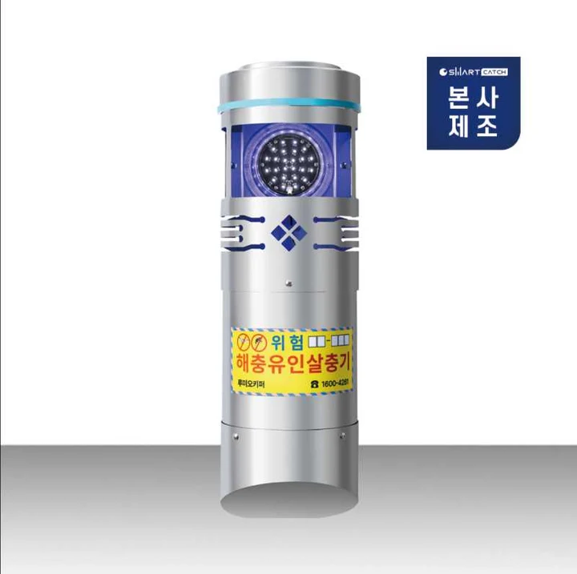
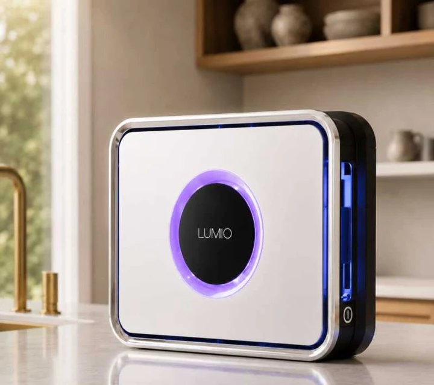
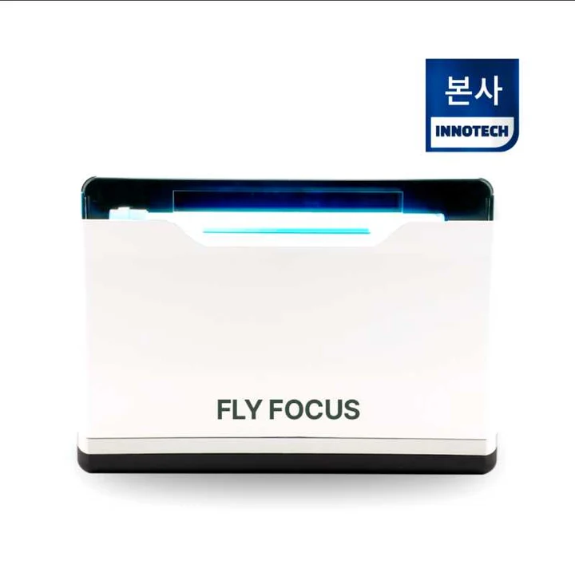
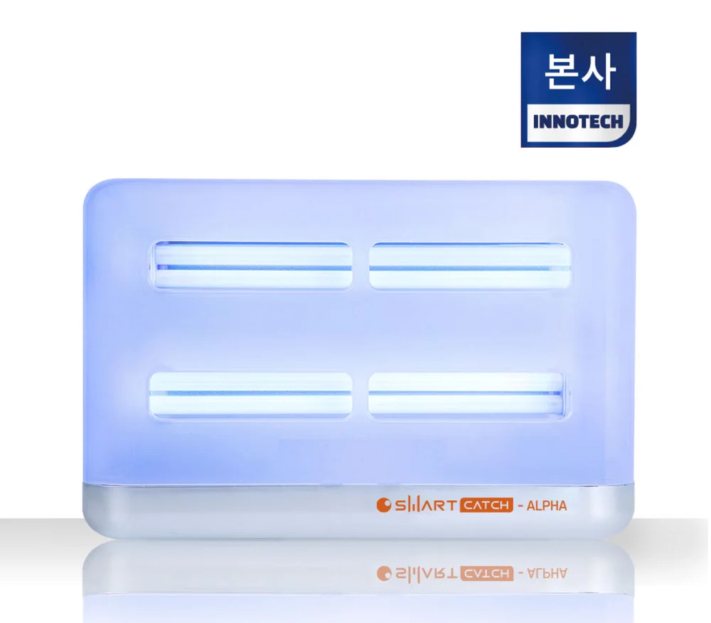

에코플랜 공식 포충기 쇼핑몰, 유인 파장과 설치 동선까지 공간에 맞게 선택하세요.
날아다니는 비래해충(파리·나방파리·초파리·모기)의 포획과 모니터링을 돕는 포충기 라인업입니다. 설치 공간(야외·매장·화장실)별 사양을 비교하고 네이버 스마트스토어 구매 또는 전문가 설치 상담을 이용하세요.
에코플랜 공식 포충기 라인업 (4종)
카테고리를 선택하거나 제품을 클릭하면 공식 네이버 스마트스토어 상세 구매 페이지로 이동합니다.

스마트캐치 루미오키퍼 UV LED 야외용 아파트 포충기 포충등 날 파리 벌레 퇴치기
UV LED 광원을 적용한 야외·아파트 단지용 포충등으로, 건물 외곽·정원·보행로 주변 비래해충 포획 관리에 활용합니다.
포충기 상세·구매하기 ↗
스마트캐치 루미오 UV LED 해충 퇴치기 벌레 날 파리 벌레 업소용 유인 포충기 포충등
UV LED 유인 방식을 적용한 업소·매장용 포충기로, 음식점·카페·상업 공간의 실내 날파리·비래해충 포획과 모니터링을 돕습니다.
포충기 상세·구매하기 ↗
포커스 날파리 퇴치기 모기 벌레 해충 화장실 업소용 포충기 포충등 플라이 모스 장사의신
화장실·세면장·소형 매장 공간에 설치하기 적합한 포충기로, 나방파리·초파리·모기 등 소형 비래해충 포획에 활용합니다.
포충기 상세·구매하기 ↗스마트캐치 알파 해충 퇴치기 업소용 날 파리 퇴치기 포충기 포충등 유인 BL램프
BL(Black Light) 유인 램프를 적용한 업소·작업장용 포충기로, 매장·조리실 주변·창고의 비래해충 포획 및 정기 점검에 활용합니다.
포충기 상세·구매하기 ↗| 모델명 | 분류 | 유인 광원 · 방식 | 권장 설치 공간 | 공식 판매가 |
|---|---|---|---|---|
| 스마트캐치 루미오키퍼 | 야외·단지용 포충기 | UV LED 유인 포충등 | 아파트 단지, 건물 외곽 조경, 야외 보행로 주변 | 1,210,000원 |
| 스마트캐치 루미오 | 업소·매장용 포충기 | UV LED 유인 포충기 | 음식점, 카페, 베이커리, 일반 상업 매장 실내 벽면 | 154,000원 |
| 스마트캐치 알파 (ALPHA) | 업소·매장용 포충기 | BL(Black Light) 램프 유인 | 외식 매장, 조리실 주변 통로, 식자재 창고, 작업장 | 187,000원 |
| 포커스 (FOCUS) | 소형·화장실용 포충기 | 소형 유인 포충등 | 화장실, 세면장, 소형 매장, 탕비실 등 국소 공간 | 143,000원 |
표시 가격은 에코플랜 공식 등록 기준이며, 실제 재고·배송비·할인·소모품 옵션 및 교환·보증 조건은 연결된 스마트스토어 상세 페이지 또는 고객센터(1688-4587) 상담 기준을 따릅니다.

공간에 맞는 포충기
선택·설치 상담
매장, 주방 주변, 창고 등 설치 장소와 식품 노출 여부를 먼저 확인합니다. 포충기는 날아다니는 성충의 포획과 모니터링을 돕는 장비이므로, 배수구 유기물막·정화조 유충 등 발생원 제거와 출입구 유입 차단을 병행해야 효과가 유지됩니다.
구매·설치 전 꼭 확인할 세 가지
설치 위치와 동선
조리대·식품 바로 위나 외부 유리창 밀착 설치를 피하고, 출입구 유입 동선과 벽면 전원 위치를 확인합니다.
유지관리와 소모품
포획지(끈끈이 등) 점검 편의성과 UV LED·BL램프 등 소모품 교체 주기, 정기방제 연계 여부를 함께 확인합니다.
발생원 병행 관리
화장실 배수구 나방파리나 주방 초파리가 다량 발생할 때는 유충 서식원 세척·약제 처리를 함께 진행해야 합니다.
포충기 구매·설치 자주 묻는 질문
업소용 포충기 선택 시 UV LED 모델(루미오)과 BL램프 모델(알파)은 어떤 차이가 있나요?
스마트캐치 루미오(154,000원)는 UV LED 광원을 적용해 음식점·카페·베이커리 등 일반 상업 매장 실내 벽면에 적합하며, 스마트캐치 알파(187,000원)는 BL(Black Light) 유인 램프를 적용해 외식 매장·조리실 주변 통로·식자재 창고·작업장 환경에 폭넓게 활용됩니다. 야외 단지·외곽 조경에는 야외용 루미오키퍼(1,210,000원), 화장실·세면장 등 소형 공간에는 포커스(143,000원)를 권장합니다.
포충기를 설치할 때 피해야 하는 위치가 있나요?
조리대나 식기·식품 노출 구역 바로 위쪽은 포획된 해충 사체 낙하 우려가 있으므로 이격해 설치해야 하며, 외부 유리창 바로 옆에 설치하면 실외 해충을 유인할 수 있습니다. 출입구 유입 동선과 주변 조명 간섭을 고려해 벽면에 배치하는 것이 좋습니다.
포충기 대량 구매나 전문가 방문 설치·정기 소모품 관리도 신청할 수 있나요?
네, 단품 즉시 구매는 연결된 공식 네이버 스마트스토어에서 가능하며, 사업장 다수 설치·위치 선정 상담이나 정기 해충방제와 연계한 포획지·램프 관리 문의는 에코플랜 고객센터(1688-4587) 또는 온라인 상담신청을 통해 안내받으실 수 있습니다.
시설별 적용 범위와 작업 조건은 현장 확인 후 안내합니다. 서비스 내용 문의